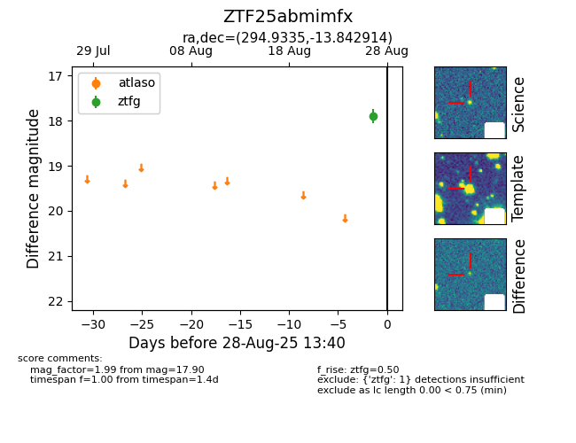

FINK: ZTF25abmimfx
Lasair: ZTF25abmimfx
ALeRCE: ZTF25abmimfx
ZTF25abmimfx (ztf,fink)
equatorial (ra, dec) = (294.9335,-13.84291)
galactic (l, b) = (25.7092,-16.84926)

last ztfg=17.90
1 ztfg detections